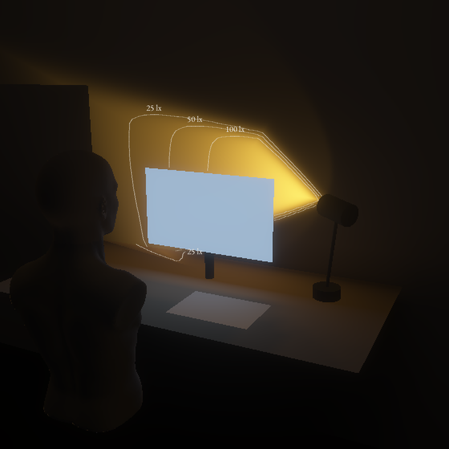

Gesten
Skyv spegelen inn.
3,80 Wfor 350 lx på feltet · tak 7,5
0,24jamnheit · referanse 0,6
821 cd/m²høgst mot auget, 25 til 60 cm · F1 3000
4,0 tarbeidslys per 21700-celle
Langs overgangen, lx
Prinsipp
Ei linse teiknar eit vindauge av lys på veggen. Ein spegel glir inn i strålen og legg feltet på bordet, medan vindauget blir ståande.
Kroppen er ikkje forma enno. Næraste nabo: ingen kjend lampe deler strålen slik.
Skissemodell til 18.11
Ei lupe eller ei vassfylt glaskule på Ø 70 mm som linse. Maska i papp, ei trakt av folie, og frontflatespegelen frå projektoren på eit papphengsel rett etter linsa.
Føreseiing: Vindauget står i ro medan feltet kjem fram. Skjermen får under 0,15 av feltet heile vegen.
Held ikkje enno
- Maska slepp gjennom 0,47 av lyset, så arbeidslyset krev 3,8 W.
- Jamnheita er 0,24. Referansen er 0,6.
- Linsa på om lag 60 mm finst ikkje i byggjesettet.
- Vindauget har skarp kant, som verdiordet mjuk utelukkar (mi tolking).